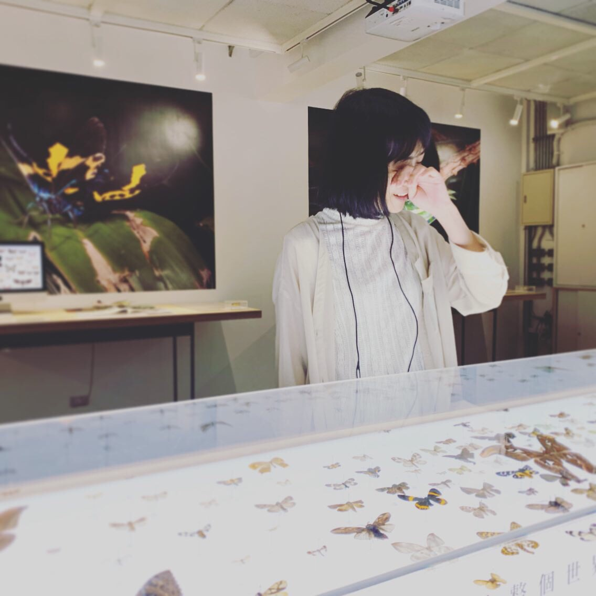

往下滑以瀏覽本站
請將手機點選圖片/滑鼠移至圖上，以檢視作品說明
Tools｜github, html, css, Java
2020年將舊網站進行「重建」&「搬遷」工程，
與交大圖書館資訊組、典藏組合作，
先將「交大發展館 NCTU Museum」內容搬移至wordpress，
再建置英文版網站。
併校後遂將內容中NCTU修改成NYCU。
https://museum.lib.nycu.edu.tw/
Tools｜CSS, Html, Wordpress, Bootstrap, 外掛串接
負責項目｜雙語網站建構、圖片編輯、文字潤飾、資料庫搬遷整合
2024年新版官方網站。
由零開始建構，串接多樣外掛
Tools｜Bootstrap, CSS, Wordpress
負責項目｜網站架構、圖片編輯、文字潤飾、外掛串接、GA4與SEO
Tools｜Illustrator, Photoshop
負責項目｜玩具包裝吊卡、海報、酷卡
Tools｜Illustrator
負責項目｜排版設計、印刷設計
詹姆士合唱團｜迷你中文化計畫
https://xuanscode.github.io/myproject/
Tools｜Html, CSS, Javascript
負責項目｜網站架構、圖片編輯、中英翻譯
BA of NYUST
graphic * web design & hand drawing & content writing
Web Developer / Designer / Digital Marketing
contact me : xuandesignn@gmail.com
